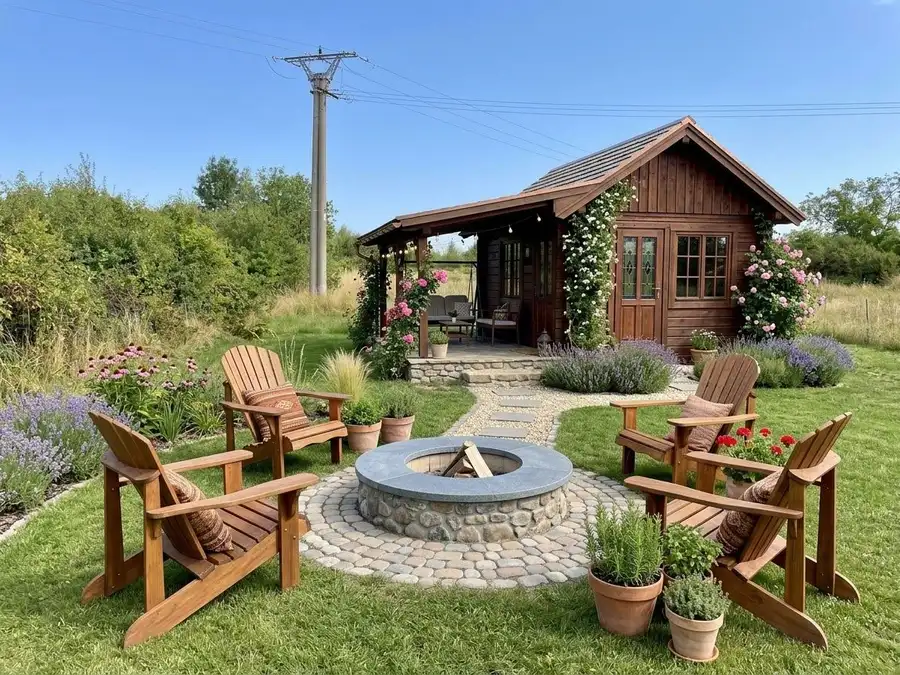
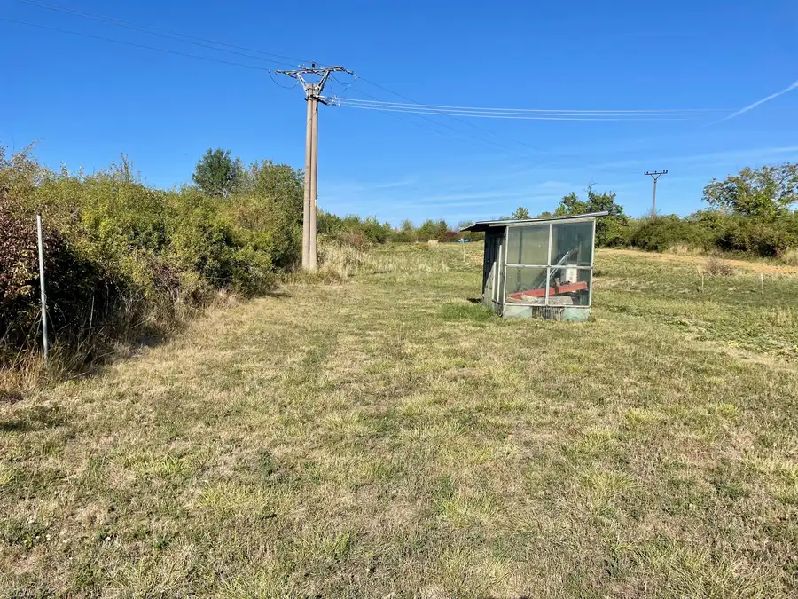
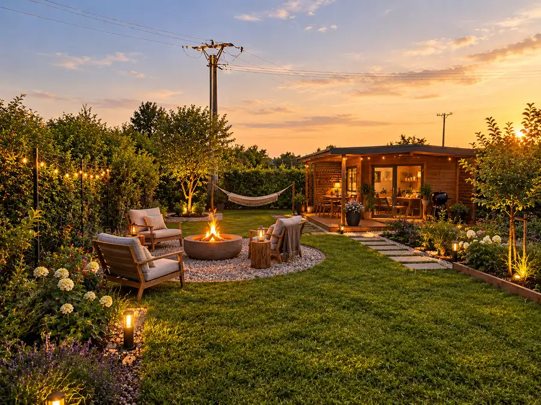
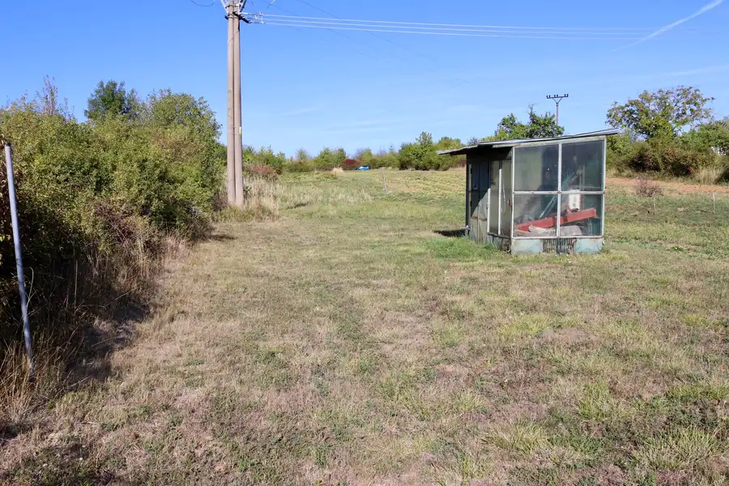
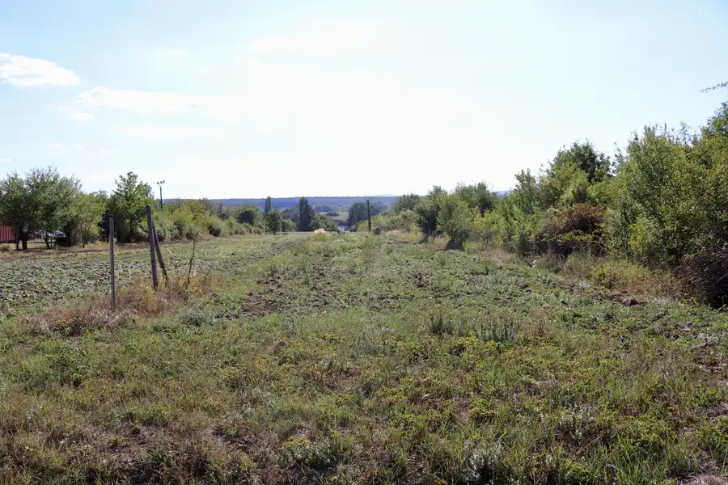
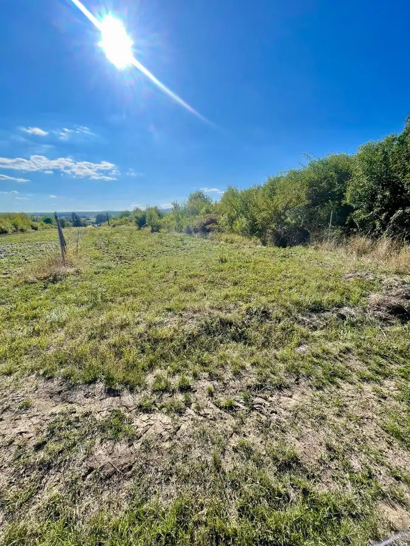

Predaj slnečného pozemku 1 521 m² (Štefanová) – investičný pozemok, ideálny na záhradu, výsadbu či rekreáciu
Štefanová






- Plocha1521 m²
- VlastníctvoOsobné
O nehnuteľnosti
Ponúkame na predaj priestranný, slnečný pozemok s celkovou výmerou 1 521 m², nachádzajúci sa v kľudnom prírodnom prostredí obce Štefanová (okres Pezinok). Pozemok pozostáva z dvoch nadväzujúcich parciel registra C a je ideálnou voľbou pre každého, kto hľadá vlastný priestor na oddych, pestovanie, založenie sadu, ako aj pre investorov hľadajúcich uchovanie hodnoty financií do budúcna.ZÁKLADNÉ ÚDAJE:Lokalita: Obec Štefanová (k. ú. Štefanová, okres Pezinok)Celková výmera: 1 521 m² (parcela 630/2: 1 187 m² + parcela 631/2: 334 m²)Rozmery pozemku: šírka cca 9,5 m × dĺžka cca 160 mVlastníctvo: Osobné (podiel 1/1, LV 506)Register: Parcela registra CÚzemný plán (UPI): V územnom pláne obce vedené ako plochy bývania – VÝHĽAD (rezerva na budúci rozvoj bývania).Využitie dnes: Záhrada, sad, poľnohospodárske a rekreačné účely, možnosť umiestnenia mobilného domčeka, náradňovne či prístrešku (v závislosti od platných regulatívov obce).HLAVNÉ VÝHODY POZEMKU:BODOVÝ POTENCIÁL DO BUDÚCNA: Zaradenie v ÚPN ako výhľadová plocha pre bývanie predstavuje zaujímavý investičný potenciál s perspektívou zhodnotenia v budúcnosti po zmenách územného plánu.Veľkorysá výmera a dĺžka: Celková plocha cez 15 árov s dĺžkou až cca 160 metrov poskytuje dostatok priestoru a súkromia na kombináciu úžitkovej záhrady, sadu či relaxačnej zóny s ohniskom.Celodenné slnko: Výborná orientácia zaručuje dostatok svetla pre pestovanie zeleniny, ovocia či vinohradu.Čistý právny stav: Pozemok je zapísaný ako C-parcela vo výhradnom vlastníctve 1/1, bez ťarch.Atraktívna lokalita Malých Karpát: Pokojné prostredie s rýchlym dostupom do okolitých obcí (Častá, Budmerice, Modra) a skvelými možnosťami na turistiku či cykloturistiku.CENA: 23 500 € Obrázky s objektmi sú ilustračné (AI 3D vizualizácia možného architektonického zámeru).Zaujala vás táto ponuka? Radi vám poskytneme podrobnejšie informácie, alebo dohodneme osobnú obhliadku priamo na pozemku.KONTAKT:Telefón: 0914 450 595E-mail: uzovic@daestate.sk
Parametre
- Druh
- Záhrada
- Dátum zverejnenia
- 16. 09. 2026
- Dĺžka pozemku
- 160
- Elektrina
- Pri pozemku - 400 V
- Odpadové vody
- Nedostupné
- Plocha pozemku
- 1521 m²
- Plyn
- Pri pozemku
- Prístupová komunikácia
- Asfaltová, Kamenitá
- Terén pozemku
- Mierne svahovitý
- Typ
- Predaj
- Vlastníctvo
- Osobné
- Voda
- Pri pozemku - Verejný vodovod
- Šírka pozemku
- 9.5